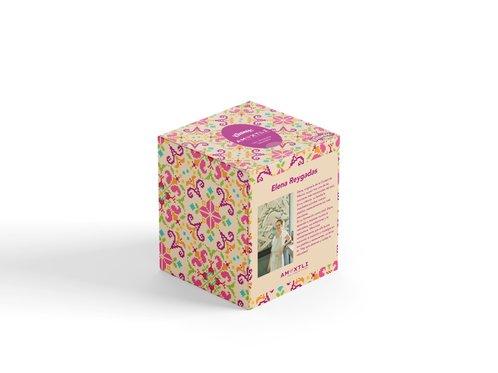
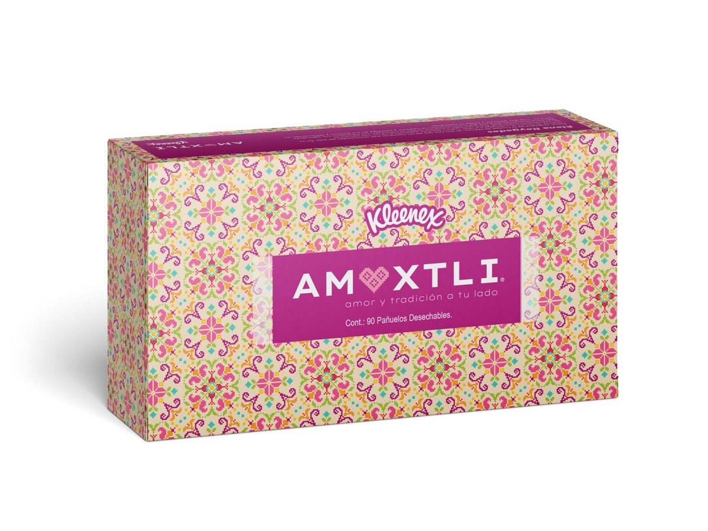

Proyecto
Kleenex AMOXTLI
En este proyecto se creó una nueva línea de Kleenex llamada Amoxtli inspirada en la chef mexicana Elena Reygadas. Se creó un master graphic a partir de la tradición mexicana de bordado.
Galería
Imágenes del proyecto

